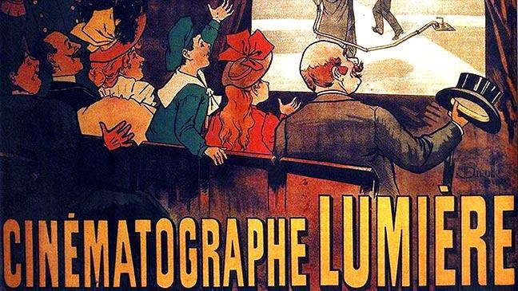
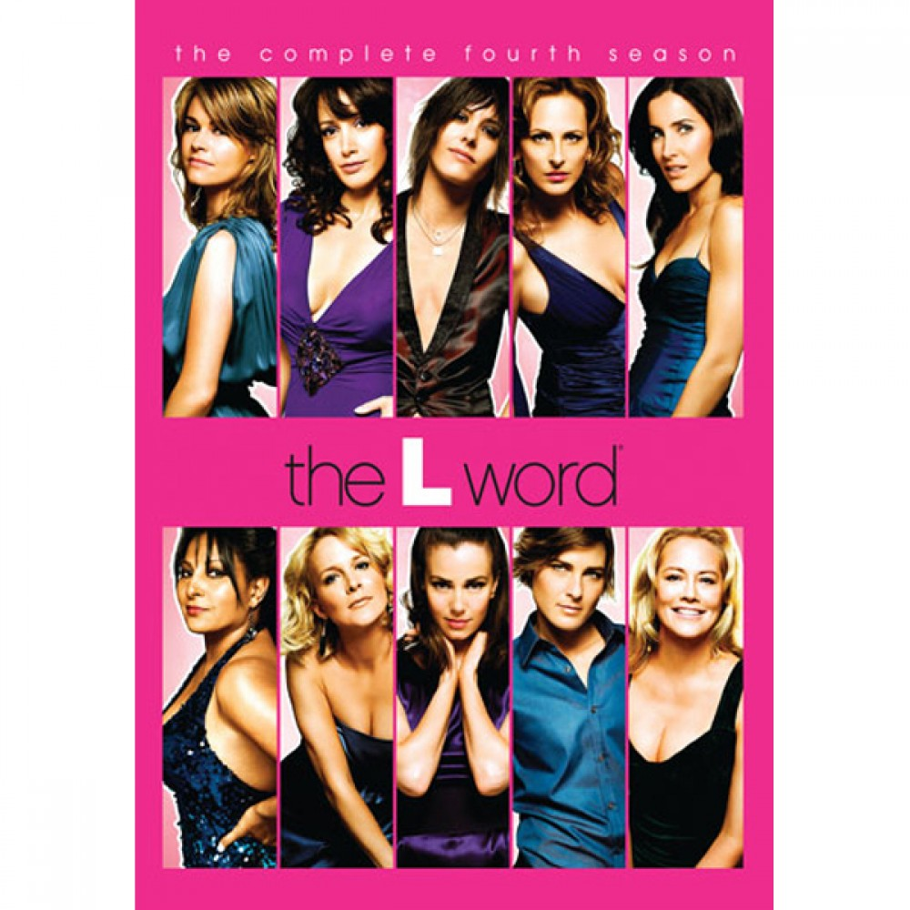

Blog
Film, TV and Video Media
Over a period of 8 weeks, I had been given readings to consider and write blog posts about. The entries would summarise the main subjects of the article as well as linking this to other readings and sources. This led me onto identifying a way to extend this topic further with a pitch of a potential academic research project. Below are the responses I have written to the weekly readngs, simply click on the entry title and the full text will shown.
This week the concept of historiography, writing about the past, and the history of broadcast television was introduced. Media Studies: Texts, Production, Context (2nd Edition), was the main reading, within this was an explanation of historiography and how to implement it ourselves, identifying events throughout media history. Long and Wall also discuss the media’s significance relating to its history, suggesting Media tells us about its own past including broader aspects such as politics, society, and culture in relation to its production and use. (Long, 2012: 459) Although, the article suggests that historiography is useful, it does have its limitations, particularly, often a single medium or event is focused upon. (Long, 2012: 456) I have 2 readings to test this concept.
The first reading: The Origins of Public Service Broadcasting (British Television Before the War) in Michele Hilmes, gave a broad history of television before and after the war highlighting key events, for instance, 1920’s Britain had the BBC and a similar system had been created in America. (Creeber, 2003: 22) The article emphasises that television is based upon radio and describes it as “Radio with pictures” (Creeber, 2003: 25) Long and Wall had a similar idea. Despite the transition from radio to television the aim of providing a public service remained and the BBC formed a domination in the form of a monopoly within the media industry, monopolies was a key topic covered in this week’s lecture. A lot of media history is covered in this article but briefly, and the choice of events considered significant is down to opinion, events themselves do not show why they are significant or explain how they better our understanding. (Long, 2012: 462)
Whereas, The Forerunners of a New Era: Television history and ruins of the future, gives a narrower approach focusing on a single event, Yuri Gagarin’s space flight orbiting Earth in 1961, this revolutionised both astronomy and broadcasting. To make this event viewable internationally, a network was established from Russia throughout Europe making the first transnational broadcast. “The historicality of the event thus has two different aspects: the achievement of making the first human space flight, and the perhaps more modest one of establishing a television network spanning Europe. Today, this second achievement is almost forgotten.” (Lundgren, 2015: 178) This events importance often gets dismissed in terms of broadcasting, it’s thought to be because it did not happen in one country and wasn’t a major success of the western culture. (Lundgren, 2015: 187) However, this article directly focuses on this one event and single medium therefore you see its significance in terms of broadcasting history and how it has influenced television today.
To further this research, I would look at modern history methods of receiving media, researching the transition from television to streaming services would be a possibility. Performing an organisation study on services like YouTube and Netflix would give an insight to this major development in media history, why it happened and where this may lead in the future.
References/Bibliography
Creeber, Glen (2003) The Origins of Public Service Broadcasting (British Television Before the War) in Michele Hilmes (ed.) (2003) The Television History Book. London: BFI. Pp.22-26
Long, P and Wall, T (2012) Media Studies: Texts, Production, Context (2nd Edition), London: Pearson.
Lundgren, L., Medie- och kommunikationsvetenskap, Institutionen för kultur och lärande & Södertörns högskola 2015, “The Forerunners of a New Era: Television history and ruins of the future”, Media History, vol. 21, no. 2, pp. 178-191..
This week, Media Studies: Texts, Production, Context (2nd Edition), was our reading on political economy, power and ownership of media. Vincent Mosco defines it as “The study of the social relations, particularly the power relations”. (Mosco, 1996: 25) In the lecture, it was also discussed identifying 3 factors: funding, organisation, and regulation. To be successful within the political economy, having an audience is necessary, this is what companies compete for, as bigger audiences will bring profits and a platform for future projects. To gain audience’s companies find a common denominator which attracts masses, or they focus on one topic to appeal to smaller niche audiences. Therefore, there can be broadcasting similarities, Hotelling found this in his research, companies don’t take risks, so aim at what’s popular in the current market. (Long, 2012: 176) Therefore success is about meeting the audiences’ requirements.
However, Smythe suggests audiences are the commodity as products are aimed at people with varying tastes. (Long, 2012: 175) But there are different ways of viewing audiences: Audience as Market and Audience as Public, was the second reading. Audiences are a market; therefore, power and money are the focus, the primary aim being to gain attention of audiences for potential goods, with the transfer of meaning being secondary. Whereas, audiences can be viewed as the public, they’re the receivers of messages with the primary aim being to educate and entertain those watching. Being a market and public are interchangeable and both lead to company growth, recently the two concepts have merged to provide better research to better serve the audience. (Ang, 1991) I disagree with the statement made about television being purely an economic matter (Ang, 1991) as broadcasting still has the aim to inform and provide a public service, I do however agree with audiences being a market to be won.

Success is down to company growth, this leads to a monopoly being formed, my final reading: The Media Monopoly, accounts how Disney has become a monopoly. A method of growth used by Disney within the political economy is integration: horizontal integration is when a company has bought a smaller company of the same production level, Disney now owns the company Lucas Film. Vertical integration is the buying of a company on a different production level, Disney bought shares of ABC. Finally, there is lateral integration which is the buying of a company of a different medium or industry, forming a synergy, Disney own 429 retail stores alongside others sectors. (Long, 2012: 180) (Bagdikian, 1997) Disney had this aim of becoming a monopoly from the start, their chairman said “It doesn’t matter whether it comes in by cable, telephone lines, computer or satellite. Everyone’s going to have to deal with Disney”. (Bagdikian, 1997)
An idea for academic research would be to see how reliable the media is, seeing how the media is manipulated and how political economy power is misused, Channel 4 recently broadcast about tricking the media with fake news, I would research how this happens and how media companies are trying to prevent future false reports.
References/Bibliography
Bagdikian, B.H. 1997, “The media monopoly”, Television Quarterly, vol. 28, no. 4, pp. 29.
Channel 4 announces fake news week – channel 4 – Info – press (2017) Available at: http://www.channel4.com/info/press/news/channel-4-announces-fake-news-week (Accessed: 13 February 2017).
Chapter 2 (“Audience-as-market and audience-as-public”) in Ang, Ien (1991) Desperately Seeking the Audience. London: Routledge.
Mosco, V. (1996) The Political Economy of Communication: Rethinking and Renewal, London and Thousand Oaks, CA: Sage Publications.
Long, P and Wall, T (2012) ‘Political Economy of the Media’ IN Media Studies: Texts, Production, Context (2nd Edition), London: Pearson. pp. 172-185.
This week we were introduced to studying film and considering it as a language, we study film because we want to better our understanding. How films mean, or, from aesthetics to semiotics and half-way back again, states that film studies address 3 problems: “the relation of the film to the world it represents; the internal organisation of filmic discourses; and the reception of the film by the spectator.” (Nowell-Smith, 2000: 8) This reading identifies films only possess meaning because audiences want them to. Although film is not majorly considered a language, Bazin thinks that cinema should be recognised for its systematic communicative power, supported by Saussures investigation into signification identifying language as a system of meaning, consequently film is a language. (Nowell-Smith, 2000: 13) A series of prompts portray meanings, the production team are responsible for these and they act as indicators giving an atmosphere and understanding of the scene, without dialogue film can still be considered a language as the images still possess meaning. (Nowell-Smith, 2000: 10)
Audiences are responsible for meaning as film is often focused upon reality, Visible Fictions: Cinema, Television, Video, states “The centring of all kinds of broadcast TV drama upon the family produces a sense of intimacy, a bond between the viewers’ conception of themselves.” (Ellis, 1982: 136) This suggests a stereotype and something to relate to. The main point is that although television and cinema seem alike and show similar products, they’re different, suggesting television has an emphasis on sound as this is a carrier attention meaning images lack detail so that it’s easy to understand and allows for continuity. The immediacy of images, direct addressing, and interaction with audiences, gives the perception of live television whereas it is not. (Ellis, 1982: 128). Comparisons are made, by describing television as a glance, more casual and often used in the background, and cinema as a gaze, everyone’s focus is on the film with no distractions as it is quiet and dark, cinema can be considered a special event. (Ellis, 1982: 137)

In addition to the 2 readings, I carried out a textual analysis on The Big Bang Theory. One topic that stands out is the ‘bromance’ between Howard and Raj, this is evident through characteristics and actions portrayed towards each other as well as a clever storyline and use of camera angles focusing on the pair. The relationship they have is based on a stereotype of homosexuals being camp but this adds to the comedic values of the television show.
I now appreciate the contrast between cinema and television, although the mediums are similar, the experiences are very different but for a purpose. I see things in a different way and consider film as a language which is influences by its audiences to provide a realistic representation of society. As an idea for academic research I would carry out an ethnographic methodology to find out what a programme’s audience is and what is done to represent society on screen.
References/Bibliography
Ellis, John (1982) Visible Fictions: Cinema, Television, Video, Routledge: London – pp. 127-159
Nowell-Smith, Geoffrey (2000) ‘How films mean, or, from aesthetics to semiotics and half-way back again’ in Gledhill, C and Williams, L. (2000), Reinventing Film Studies. London: Bloomsbury Academic.
This week, television and film regulations was the topic, my first reading, An Introduction to Television Studies, focused on censorship of television and sexual content, the primary message being “Broadcasting in Britain is largely self-regulated, on the basis of codes and guidelines drawn up and interpreted by bodies” (Bignell, 2004: 231). The main point of implementing censorship is to focus on good taste and decency, to prevent encouraging crime and disorder for the safety of audiences (Bignell, 2004: 231). A timeline was used to show the history of sex on British television and how attitudes changed, from 1931, where guidelines were strict and prohibitions existed, up to modern day where censorship is more relaxed with 2 preventions remaining: representation of erect penises and representation of sexual behaviour involving children (Bignell, 2004: 241). A key argument made was, “Viewers will pay money to see images of nudity or violence” (Bignell, 2004: 243) and television is a commodity paid so why can’t nudity or violence be broadcast.
An Introduction to Film Studies, focuses on films and classification. Censorship is defined as a reflection and protection of standards of morality generally held in society (Nelmes, 1999: 48). The article compares America with Britain, the US system has the power to censor content but only if it is extreme. They also distribute ratings for films, these come under categories: G, PG, PG-13, R and NC-17. In comparison, Britain as the BBFC, their aim is to protect children from obscene content, therefore their rating system has more categories: U, PG, 12, 15, 18 and R18. The article gives case studies where film classifications were controversial: Platoon, due to violence should be an 18, however after persuasion due to the limiting audience that an 18 rating would have, the film was given a 15. In the lecture a similar scenario with the Monty Python films was given, as film boards didn’t agree with language used.
I found my own example of a case study which pushes legislation to the limits as the film, Hate Crime, was the first film rejection since 2011. The films’ storyline was based around a Jewish family who were being tortured by Nazi’s within their home. The rejection made 3 significant points: firstly, that the BBFC are accepting on content, as this was their first rejection for 4 years. Secondly, although the film isn’t viewable within Britain, it is accessible online, therefore if the website is being hosted abroad the film can be streamed legally. Finally, the rejection makes a query about what subjects lie within genres, part of the rejection was due to changes in pornographic regulations, however it was a horror film, so this comment is insignificant. (Kapka, 2017: 78) Finally, although the film was rejected, the film will be remembered, “Thanks to new forms of distribution, the BBFC cannot prevent those that want to see a film from doing so. Instead, a BBFC ban serves as a marketing tool: a badge of honour”. (Kapka, 2017: 94)
An academic research opportunity within this field would be to research cases where countries have different opinions on the rating of the same film, whether there are some contradicting cases and why these varying opinions occur. This would lead on to a sociological and legal study looking at what is deemed acceptable viewing for different age groups within regulations.
References/Bibliography
Bignell, J (2004) An Introduction to Television Studies, London: Routledge. pp 229-252
Kapka. A (2017) “‘Cuts are not a viable option’: The British Board of Film Classification, Hate Crime and Censorship for Adults in the Digital Age”, 2017, Journal of British Cinema and Television, vol. 14, no. 1, pp. 77-97.
Long, P and Wall, T (2012) ‘Producing audiences: what do media do to people?’ IN Media Studies: Texts, Production, Context (2nd Edition), London: Pearson. pp 274-299
Nelmes, J (1999) An Introduction to Film Studies, 2nd Edition, London: Routledge. pp. 48-53
New Media: Theories and Practices of Digitextuality, provides an account on the convergence of television and internet platforms, giving audiences more content. A history is given developing our understanding of the concept, the first broadcast with further content uploaded online was a murder investigation series. Merging mediums was a stunt and an experiment as it had not been done before, however, it was successful with audiences being attracted to the interactive elements and soon names such as Microsoft and NBC developed the idea further. (130). The 2 stages of broadcasting and uploading were referred to as shifts. (Everett, 2003: 128) The first shift models television as a flow, a paradigm created by Raymond Williams suggesting television was a continuous content flow forming different programming times: primetime and daytime for example. (Everett, 2003: 133)
Although it seems beneficial, there is a negative impact as the convergence increases churning and grazing, flicking through channels to see what is on, also the introduction of internet content means that the traditional television format has been damaged. (Everett, 2003: 135) Furthermore, content is available on various platforms, so the concept of research and tracking viewing patterns has become difficult to predict. A second phase was introduced to overcome these difficulties, involving schemes such as niche-ing, which is targeting a smaller market audience to gain guaranteed viewings, and dispersal which is focusing on the branding and distribution of content to gain a sustainable audience. (Everett, 2003: 136) A major part of this was counterprogramming, different types of shows are broadcast at the same time giving a variety of content and guaranteed audiences for each programme. (Everett, 2003: 134) Referring to previous readings, television has the aim of providing a service to its audiences, this is how the service is guaranteed.
To apply the content of this reading, I carried out some ethnographic research myself considering my viewing habits. I monitored my media intake for a period and came to the following conclusions: firstly, most of the content is from streaming services or catch-up services, I access this through my laptop or tablet and I rarely use my television which is a transition from my childhood. The major changes I can see in receiving media is the accessibility, there is a variety of content with less structure to the platform as content is instantly accessible allowing for binge watching compared to the television broadcast schedule.

As a future academic research project, I would consider an industry and audience study on a platform such as BBC 3, this transitioned from television to online. The industry study would broaden my understanding of why this change happened and if competition from the likes of Netflix influenced the BBC, and I would also establish whether the change has been successful. The audience study would allow me to gain reactions to the change, therefore both the company and audience are considered. The methodology for this would be through interviews and questionnaires to allow for open answers and true opinions to come across.
References/Bibliography
Everett, A and Caldwell, J (Eds) (2003), New Media: Theories and Practices of Digitextuality, Routledge, London and New York – pp 127-144.
The main reading this week was, Television, Ethnicity and Cultural Change, this was about how audiences react to television content, taking Neighbours as a case study to carry out an audience study. The article was suggesting Southall was a representation of Neighbours as the programme is based around gossip between characters yet the show causes gossip itself within society. (Gillespie, 2003; 315) The main point made is soap talk, this is finding pleasure in programmes such as soaps as it is relatable to real life. By combining fiction with real experiences and bringing concerns of the private sphere into the public eye, soaps have become successful and formed soap talk.( Gillespie, 2003; 317)The article gives validation of this: firstly the language used on the show is similar to real life so provides material for conversation among friendships, also soaps provide pleasure as it is a common ground of interest which forms friendships, this also introduces more audiences to the show through either peer pressure or pleasure. (Gillespie, 2003; 317) Research has shown that audiences find comfort from discussing storylines as it allows them to make sense of their own lives. (Gillespie, 2003; 321)
I found my own audience study to further this, the investigation involved 121 teenagers being interviewed after watching a Dutch crime series, the episode they watched was a stereotypical crime drama as the aim of the investigation was to see how the show influenced their opinions on the police. (De Bruin, 2010; 310) From the audience study it was obvious audiences see police drama as a game, “Who committed the crime?” (De Bruin, 2010; 316) Content is engrossing so audiences predict the outcome, however, a major concept which was suggested in the results were that the representation of the police was “too positive and therefore unrealistic” (De Bruin, 2010; 324) suggesting that the police had influenced the production and made themselves look good. Consequently, this leads to doubt about how reliable the media is as it is easily manipulated. In response to this, the audience study suggests that crime drama should be more truthful and realistic to be as successful as soaps. (De Bruin, 2010; 327)

I carried out my own audience study in the workshop, I focused on Netflix and the most popular shows, as this is current with increasing audience numbers. In the time that we had I made use of social media to implement virtual ethnography, my results we varied but one piece of material was significant as it was a map of America highlighting the most popular shows in each state, an interesting and useful source. However, Netflix published this themselves, therefore there is a doubt about how reliable the material is or is it a publicity stunt.
I would want to carry on this audience study into Netflix and its most popular content as a future academic study. I would continue with the virtual ethnography but also carry out questionnaires to see a broader scope of answers from a wider population to continue and develop the investigation.
References/Bibliography
Gillespie, Marie (2003) “Television, Ethnicity and Cultural Change” IN Will Brooker and Deborah Jermyn (eds.) The Audience Studies Reader. London: Routledge.
De Bruin, J. 2010, “Young people and police series: A multicultural television audience study”, Crime, Media, Culture: An International Journal, vol. 6, no. 3, pp. 309-328.
Our reading this week, How to do a Critical Discourse Analysis, presented the concept of critical discourse analysis and why we carry it out. The article explains the concept by considering language and visual communications, giving example case studies to relate to such as Prime Ministers speeches as well. Critical discourse analysis combines language, power and ideology which helps develop an understanding of the media text and what it really means (Machin & Mayr, 2012: 4) as often meanings and ideologies aren’t stated directly in the text. (Machin & Mayr, 2012: 3) The primary focus of critical discourse analysis is to see how power is being used however, there are multiple ways of doing this: linguistic determinism looks at how the way we think is determined by the language we receive which impacts how we see the world, this shows how powerful the media is and how it impacts us. (Machin & Mayr, 2012: 16) Social semiotics are based on a theory that language represents society, this was backed by Halliday who suggested language allows for “more open interpretations of the world” (Machin & Mayr, 2012: 17) However, social semiotics can be manipulated through choice, as we all have the power to accept and refuse different theories therefore creating our own identities. It is simply a matter of choice. (24) But, ideologies prevent us from seeing choices as stereotypes are made.
An example of a critical discourse analysis is in Paradigmatically Oppositional Representations in The L Word, this looks at the representation of lesbian identities compared with bisexual identities in the text, The L Word. The analysis states that within the first scene an ideology is portrayed as panning shots of Los Angeles are used to give a visual representation of the ideal traditional lifestyle, however, this is cut away to the lesbian couple in bed. This is 2 stereotypes, firstly the ideal life and secondly lesbian behaviour. (Davies, 2008; 180) The analysis then goes onto how lesbians are portrayed, “The butch us perhaps the most useful example of the primary, explicitly secure lesbian identity” (Davies, 2008; 189) The stereotype of lesbians being masculine has been used as this is a common visual communication the audience can understand. However, the lesbian community is presented in a good way and is accepted in the text, as they are given a positive and powerful outlook and are accepted within society. (Davies, 2008; 181)
Having looked at an analysis of how a lesbian community is represented through language and visual communications, a possible academic research project would be to repeat the investigation on a gay text, looking at how the male gay community have been represented. This would again identify the ideologies used and what stereotypes have been made. However, by doing this I will be able to compare how 2 different texts work to portray similar themes, the results could be contrasting.
References/Bibliography
Machin, D and Mayr, A (2012) How to do a Critical Discourse Analysis, London: Sage. pp 1-29
Davies, F. (2008) ‘Paradigmatically Oppositional Representations in The L Word’ IN Beirne, R, (2008) Televising Queer Women, London and New York: Palgrave Macmillan.